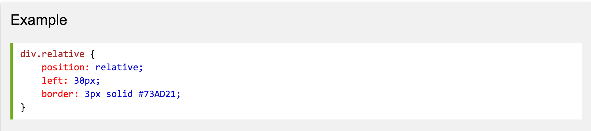

The Box Model
CSS looks at HTML elements and organizes them into boxes on the page. CSS gives each HTML element its own box. These boxes can be either block-level boxes or inline boxes. Block-level boxes sit on their own line, while inline boxes sit next to surrounding text or adjacent inline boxes.

Source: http://wwwold.gsis.kumamoto-u.ac.jp/en/opencourses/ipf/10/images/box-08_English.png
Heading (e.g. h1, h2, etc.), paragraph (p), unordered and ordered list (ul and ol), and list item (li) HTML elements are all block-level boxes and start on a new line. Image (img), bold (b), and italic (i) HTML elements are examples of inline elements, which can share a line with each other. Block-level can be nested inside of one another, in which case the outer box is called the 'containing' or 'parent' element.
Static Positioning
Static, relative, absolute, and fixed are the four possible attributes of the position property. Elements are positioned by the static property by default, even if no position is defined. If the position is undefined for all elements, they will be placed according to the "normal flow" of the page. In the normal flow, elements are positioned according to the box model that I described at the beginning of this post. Block-level elements will start on a new line and will not share a line with any other elements, while inline-block elements will be placed one after another until the line is full.
Relative Positioning
Elements whose position is set to 'relative' move relative to where they would have been in the normal flow, depending on how you set the left, right, up, or down attributes. Moving elements in this way does not affect the position of surrounding elements.
Source: http://www.w3schools.com/css/css_positioning.asp
Absolute Positioning
Setting the position value to 'absolute' takes the element out of normal flow, and surrounding elements effectively ignore the 'absolute' element. The offset properties (top, bottom, right, left) specify the element's location relative to its containing element - not relative to its position in normal flow.
Fixed Positioning
Fixed positioning is really a subset of absolute positioning in which the element is removed from normal flow and affixed to the page so that as the user scrolls up or down the page, the element stays in place.